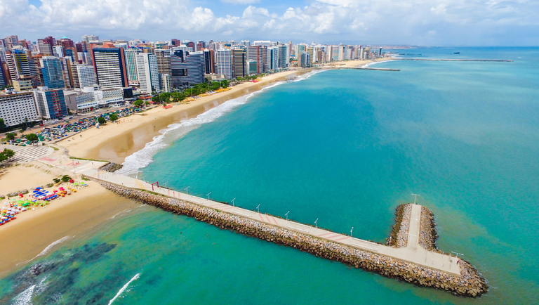
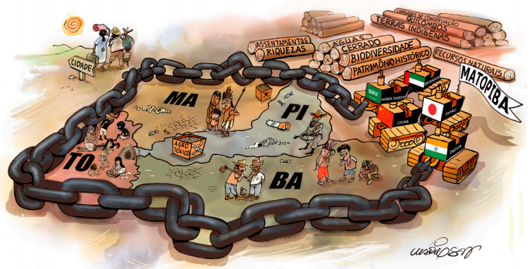

Dados demográficos:
A região Nordeste do Brasil é a terceira mais populosa do país, com uma população estimada em cerca de 57 milhões de pessoas, de acordo com os dados mais recentes do IBGE (Instituto Brasileiro de Geografia e Estatística), referentes a 2021. A região é composta por nove estados: Alagoas, Bahia, Ceará, Maranhão, Paraíba, Pernambuco, Piauí, Rio Grande do Norte e Sergipe. A Bahia é o estado mais populoso da região, com cerca de 15 milhões de habitantes, seguida por Pernambuco, com cerca de 9,6 milhões de habitantes, e Ceará, com cerca de 9,2 milhões de habitantes. A região Nordeste apresenta uma grande diversidade étnica e cultural, com influências indígenas, africanas e europeias. A população é predominantemente negra e parda, com uma proporção menor de brancos e indígenas. Além disso, a região possui uma grande concentração de população rural, especialmente no interior dos estados. Em termos de desenvolvimento humano, a região Nordeste apresenta desafios socioeconômicos e históricos, como a pobreza, o analfabetismo, a desigualdade social e a falta de infraestrutura. No entanto, também apresenta uma rica diversidade cultural, um patrimônio histórico e natural valioso e uma economia dinâmica em setores como o turismo, a agricultura e a indústria.
Personalidades Importantes:
A região Nordeste do Brasil é rica em história e cultura, e muitas figuras importantes surgiram nessa região ao longo dos anos. Aqui estão algumas das figuras históricas mais importantes para a região Nordeste do Brasil:
- Luiz Gonzaga
- Cícero
- Gilberto Freyre
- Graciliano Ramos
- Lampião
- Antônio Conselheiro
- João Cabral de Melo Neto
- Jorge Amado
- Rui Barbosa
- Ariano Suassuna
Paulo Freire
Paulo Regulus Neves Freire nasceu em Recife, em 1921. Vivenciou a pobreza e a fome na infância durante a depressão de 1929, o que o ajudou a pensar nos mais vulneráveis para criar sua metodologia de ensino de ensino, o método Paulo Freire. Em 1943 ele ingressou na faculdade de direito do Recife, durante seu período lá, Paulo conheceu Elza Maia Costa Oliveira, que seria sua primeira esposa, depois do casório o educador foi indicado ao cargo de diretor de departamento de educação e cultura do serviço social no estado de PE, lá percebeu que haviam problemas na educação de trabalhadores e adultos, na época tinham muitos analfabetos, foi então que pensou em fazer um trabalho direcionado a alfabetização. Freire virou diretor do Departamento de Extensões Culturais da Universidade do Recife. Após isso montou uma equipe com quem realizou suas primeiras experiências de alfabetização popular, algo que o levaria a criar o método Paulo Freire. Dois anos depois ele e sua equipe foram responsáveis por alfabetizar mais de 300 cortadores de cana em 45 dias, um tempo recorde. Com a chegada do golpe militar Freire foi considerado traidor da pátria e foi preso por 70 dias. Depois que seu tempo na prisão acabou o exilaram do país, dessa forma ele passou um tempo trabalhando no Chile em algumas instituições. Alguns anos depois Freire lançou o livro “Pedagogia do Oprimido” (1968), uma de suas obras mais famosas, publicado em espanhol, inglês e até hebraico. Em 1969 foi chamado para ser um professor visitante da Universidade de Harvard, uma grande honra para um educador. Com o término da ditadura seu exílio foi abolido, Paulo retorna ao Brasil em 1980. Ficou viúvo de Elza em 1986, mas dois anos depois se casou com Ana Maria de Araújo. Ele se tornou alguém muito importante para a educação, uma espécie de celebridade, justamente pelo reconhecimento de seu trabalho no Brasil enquanto esteve fora. Paulo Freire continuou escrevendo livros e dando aulas para adultos, concedeu diversas entrevistas e palestras até a sua morte, em 1997. Estima-se que cerca de 350 instituições ligadas a educação levam o nome de Paulo Freire como homenagem.

Escrito por Murillo Pereira F. dos Santos
Desafios sócios ambientais:
A região Nordeste do Brasil apresenta diversos desafios socioambientais e impactos ambientais decorrentes de atividades humanas e de fenômenos naturais. Alguns dos principais aspectos socioambientais da região são:
- Desertificação: a região Nordeste apresenta uma grande área de solo degradado, com cerca de 25% do território nordestino sofrendo com processos de desertificação. As principais causas são o uso inadequado do solo, a exploração excessiva dos recursos naturais e o clima semiárido da região.
- Seca:a região Nordeste é caracterizada por um clima semiárido e é uma das regiões mais afetadas pela seca no Brasil. A falta de água afeta a produção agrícola, a saúde da população e a economia da região.
- Desmatamento:o desmatamento da mata atlântica, do cerrado e da caatinga é um dos principais impactos ambientais da região Nordeste. A exploração madeireira, a expansão da agropecuária e a construção de infraestrutura são as principais causas do desmatamento na região.
- Poluição:a poluição dos rios, lagos e praias é um problema ambiental significativo na região Nordeste. As principais causas são o lançamento de esgoto e resíduos industriais e domésticos sem tratamento adequado, além da contaminação por agrotóxicos e outros produtos químicos.
Situações que demonstram o avanço ou retrocesso de direitos e deveres na região Nordeste:
- Avanço na inclusão social:nas últimas décadas, houve um avanço significativo na inclusão social da população nordestina, com a ampliação de programas sociais como o Bolsa Família e o aumento da oferta de serviços públicos como saúde e educação.
- Retrocesso na questão indígena:a região Nordeste é lar de diversas comunidades indígenas, que sofrem com a falta de reconhecimento de seus direitos e com a ameaça de invasão de suas terras. O desmonte de políticas de proteção dos povos indígenas pelo governo federal pode ser visto como um retrocesso.
- Avanço na igualdade de gênero: a região Nordeste tem avançado na luta pela ]igualdade de gênero, com a implementação de políticas públicas de combate à violência contra a mulher e a promoção da igualdade de oportunidades.
- Retrocesso na proteção ambiental:como mencionado anteriormente, a região Nordeste enfrenta diversos desafios ambientais, como o desmatamento e a desertificação. A flexibilização de leis ambientais e o desmonte de políticas de proteção ambiental pelo governo federal podem ser vistos como um retrocesso nessa área.
- Avanço na diversidade cultural:a região Nordeste é conhecida pela diversidade cultural, com influências indígenas, africanas e europeias. O reconhecimento e a promoção dessa diversidade cultural pode ser visto como um avanço na valorização da cultura brasileira.
- Retrocesso na liberdade de expressão:o Nordeste tem uma forte tradição de luta pela liberdade de expressão, mas tem sido alvo de ataques recentes por parte de grupos políticos e governamentais, que tentam censurar vozes críticas.
Distribuição fundiária e conflitos envolvendo a questão agrária:
A questão agrária no Nordeste do Brasil é caracterizada pela concentração de terras nas mãos de poucos proprietários, gerando desigualdade na distribuição fundiária. A região abriga cerca de 35% dos estabelecimentos agropecuários do país, porém, mais de 55% das terras agrícolas estão nas mãos de apenas 1,5% dos proprietários. Isso resulta em conflitos relacionados à posse da terra, falta de regularização fundiária, violência no campo, exploração do trabalho rural e uso de agrotóxicos. Exemplos notáveis incluem o conflito da Comunidade Quilombola de Alcântara, que busca o reconhecimento de suas terras ocupadas pela base de lançamento de foguetes, e o conflito da transposição do rio São Francisco, que impacta populações tradicionais e agricultores familiares. A falta de políticas públicas que promovam uma distribuição mais equitativa da terra e regulamentem o acesso para pequenos agricultores é um grande desafio na região. A promoção da reforma agrária, aliada a políticas de apoio à agricultura familiar e ao desenvolvimento sustentável, pode ser uma abordagem para enfrentar essa problemática.
Precarização do trabalho:
Uberização:
A precarização do trabalho se refere à deterioração das condições de trabalho e à perda de direitos trabalhistas. Isso pode incluir, por exemplo, salários baixos, falta de estabilidade no emprego, jornadas de trabalho extenuantes, ausência de benefícios e proteção social, e falta de segurança no trabalho. A precarização do trabalho pode ser causada por diversos fatores, como mudanças nas leis trabalhistas, globalização econômica, automação e tecnologia, entre outros. A precarização do trabalho pode ter impactos negativos para os trabalhadores, como piora da qualidade de vida, aumento do estresse e da insegurança, e perda de perspectivas de carreira. Além disso, a precarização do trabalho pode afetar a economia como um todo, diminuindo a renda disponível das pessoas e a demanda por bens e serviços.
É importante destacar que a relação entre a uberização e a precarização do trabalho não é exclusiva da região Nordeste, mas um fenômeno mais amplo que afeta diferentes partes do país e do mundo. Na região Nordeste do Brasil, assim como em outras partes do país, a uberização tem impactado o mercado de trabalho de diferentes maneiras. Por um lado, a plataforma Uber e outras similares fornecem oportunidades de renda para muitos nordestinos, especialmente para aqueles que enfrentam dificuldades para encontrar empregos formais. A uberização também está associada à precarização do trabalho, por causa que os motoristas parceiros são considerados prestadores de serviços autônomos, o que os coloca fora das proteções trabalhistas e benefícios sociais tradicionalmente oferecidos aos empregados formais. Eles não têm acesso a benefícios como férias remuneradas, licença médica, seguro-desemprego e contribuição para a Previdência Social.Na região Nordeste, onde a informalidade já é alta e as condições socioeconômicas podem ser desafiadoras, a uberização pode contribuir para a precarização do trabalho.